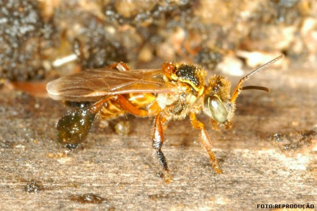
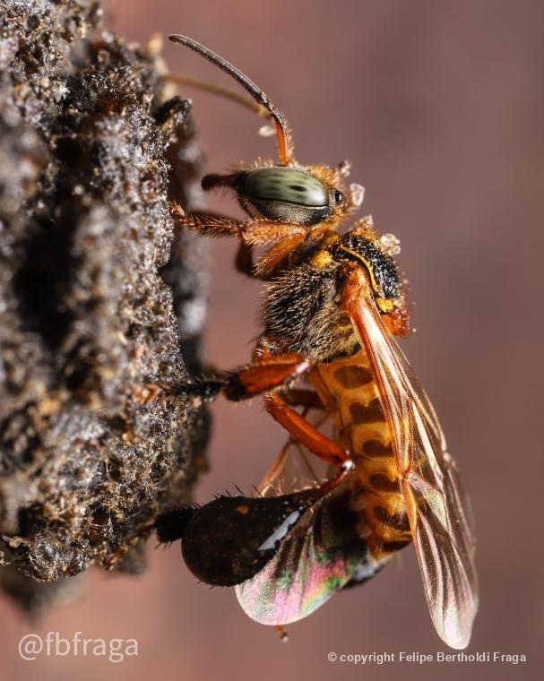

Características
É uma abelha que pode roubar o pólen de outras espécies. Sua colmeia é coberta com própolis depositado pela própria abelha.
A cria é produzida em células que encostam levemente umas nas outras ou são ligadas por um cabo pequeno de cerume, formando grupos parecidos com cachos.
Nesta espécie, as operárias nunca desenvolvem ovários.
Os indivíduos dessa espécie têm coloração amarelada, corpo fino, asas grandes com a ponta esbranquiçada e apresentam corbícula preta grande.

Defesa:
Fuga: Preferem se esconder do que atacar.
Camuflagem: Ninhos em locais discretos, como troncos ocos.
Defesa química: Produzem substâncias que repelem predadores.
Comportamento coletivo: Reúnem-se para confundir ou intimidar.
Construção de ninhos seguros: Usam barro e resina para proteção.

Importância Ecológica:
Polinização: Essenciais para plantas nativas.
Produção de mel: Produzem mel nutritivo e medicinal.
Preservação de ecossistemas: Mantêm a saúde dos ecossistemas.
Cultura e tradição: Parte da cultura de comunidades tropicais.
Resiliência ambiental: Adaptadas ao habitat, são mais resistentes a mudanças climáticas